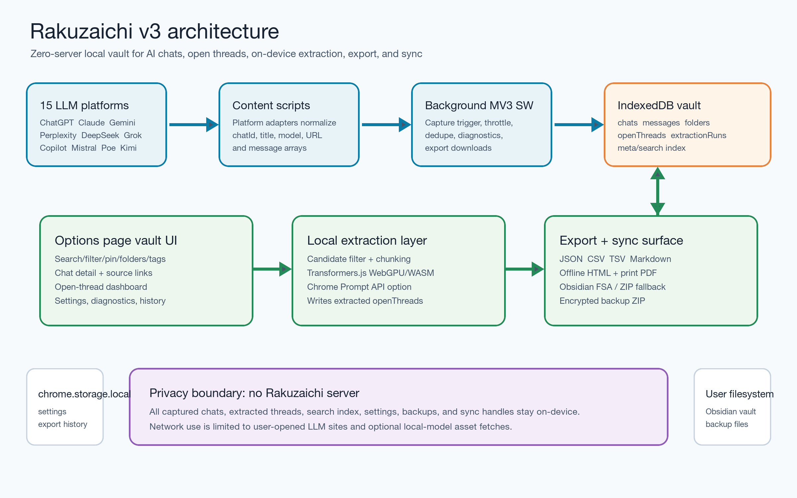

Vault browser
Search, filter, tag, pin, and organize captured chats across platforms while the data stays in browser storage.
Rakuzaichi turns scattered chat tabs into a searchable local vault with tags, folders, open threads, backups, and exports.
Search, filter, tag, pin, and organize captured chats across platforms while the data stays in browser storage.
Track TODO, FIXME, REF, PROMPT, and locally extracted follow-ups back to their source messages.
Save Markdown, JSON, CSV, TSV, offline HTML, PDF, Obsidian notes, ZIP fallbacks, and encrypted backups.
One local schema for Western and Chinese LLM chat surfaces.
Content scripts normalize chats, the background worker writes IndexedDB rows, and the options UI handles vault browsing, local extraction, export, sync, and backup.
